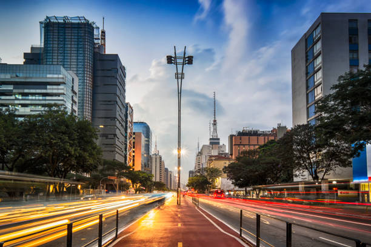
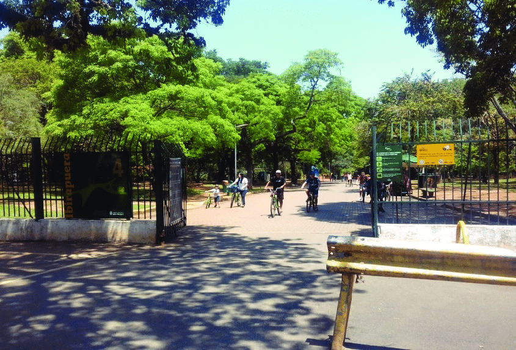

Passear na avenida paulista
um dos principais centros financeiros da cidade, a avenida paulist também possui diversas opções de entretenimento. Endereço do museu de arte de são paulo do teatro gazeta e muitos outros, a região é de facil acesso graças as diversas linhas de onibus que cruzam a avenida e a linha de metrô que passa por de baixo dela
Os bares de vila madalena

Depois de um dia de trabalho, nada melhor do que um bom chopp, um petisco e uma conversa em uma mesa de bar. opções de sobra na região das ruas aspiculeta, fradique coutinho e wisad.
O Parque do Ibirapuera
um dos cartões postais da cidade, e parque dispõe de mais de 1,5 km² de area verde, lagos artificiais e pistas de cooper e ciclismo. e se isso não fosse o suficiente, o parque costuma ser palco de diversos eventos culturais ao longo do ano.